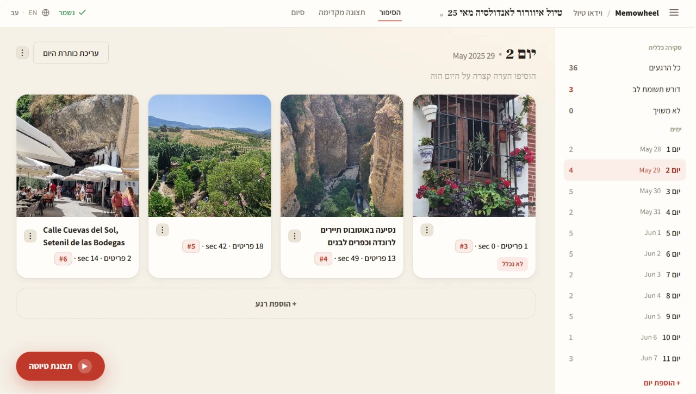

Memowheel is a free Windows app that turns your photos into a keepsake movie — a trip, or an occasion like a birthday, anniversary, or memorial. It finds the right photos, adds title cards, captions, and music, and renders a finished film — all on your own computer.
Download for Windows Free · about 195 MB · Windows 10 or 11Memowheel opens a friendly review page in your browser where you keep the good photos, fix names, choose music, and set title cards — then it renders a finished MP4 you can keep or share. No learning curve, no editing skills.
Point it at a folder from a trip. It groups your photos and clips into moments by place and day and builds the story for you to curate.
Pick a person for a birthday, anniversary, or memorial. It gathers their photos from your whole library, arranges them by year, and you confirm the matches.
Finds the people you care about across thousands of photos. Faces are processed on your machine and never uploaded.
Opening and closing cards, a choice of looks, gentle intro animations, and your own soundtrack — all fully editable.
Curate, reorder, enlarge any photo full-screen, and pick a soundtrack — in a calm, simple workspace.
The app and the finished video work in both Hebrew (right-to-left) and English.
Memowheel runs entirely on your own computer.
Download the app, then follow the short install guide. You'll be making your first video in minutes.
Download for Windows Free · about 195 MB · Windows 10 or 11